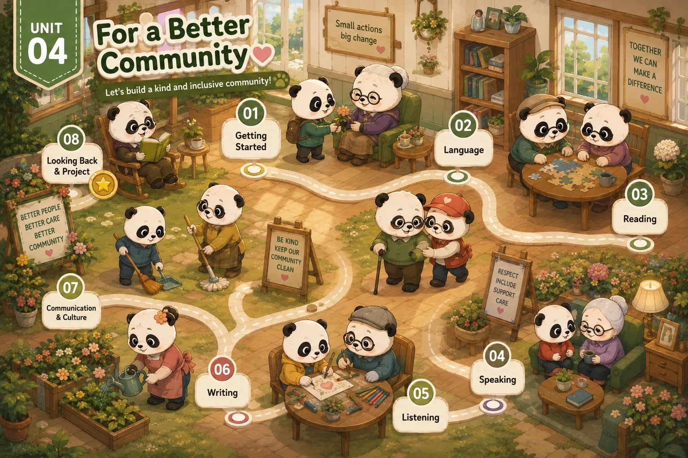

Lesson 1 · Getting started — Volunteering in the community Lesson 2 · Language Lesson 3 · Reading: Teenagers and voluntary work Lesson 4 · Speaking: Benefits of volunteering activities Lesson 5 · Listening: An announcement for volunteers Lesson 6 · Writing: An application letter for volunteer work Lesson 7 · Communication and Culture / CLIL Lesson 8 · Looking back and ProjectĐã dựng: Lesson 1, 2, 3, 4, 5, 6, 7, 8. Đủ cả 8 tiết (thêm 22/10/2026 từ bài PPT gộp BAI-DAY-HOAN-CHINH).